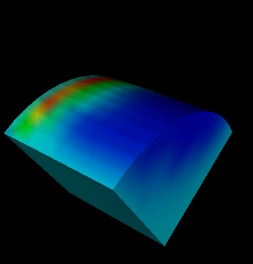

Ex: vtk> Rotate x 45 y 45
This rotates the body 45 degrees about the x axis then 45 degrees about the y axis.

|
Rotate the bodies using command line arguments (in degrees) for x,
y, and z-axis rotations.
Ex: vtk> Rotate x 45 y 45 This rotates the body 45 degrees about the x axis then 45 degrees about the y axis. |
 |